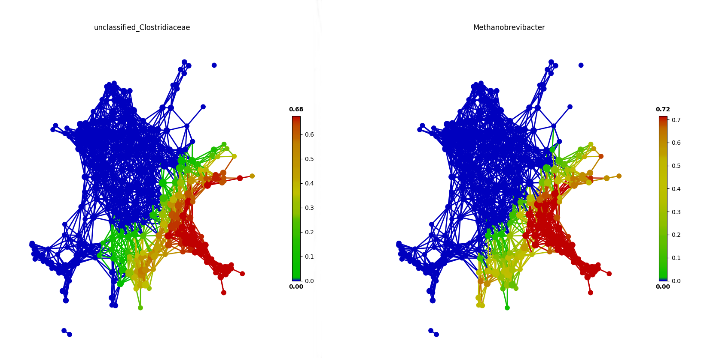
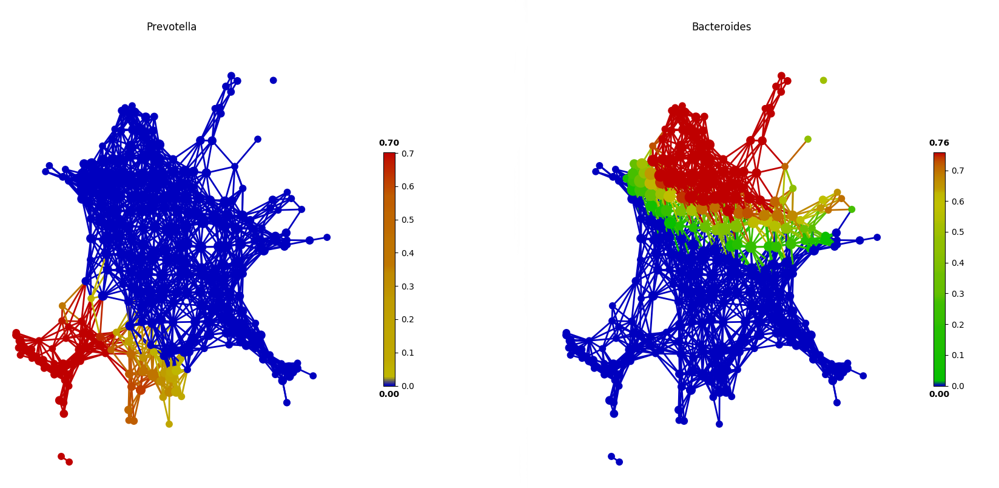

Assoication in tmap
After visualizing SAFE score of feature, we could observe some share and similar distribution between some features. From the distribution, we could see the contribution of a feature to whole network constructed by complete data.
Base on the network and SAFE score, we could calculate the association between features and extract the above relationship. Note that, it isn't a traditional association because it is calculated by comparing their SAFE distribution in network.
Highly correlated features
SAFE scores distribution between unclassified_Clostridiaceae and Methanobrevibacter in test/test_FGFP.py.

uncorrelated features
SAFE scores distribution between Prevotella and Bacteroides in test/test_FGFP.py.
